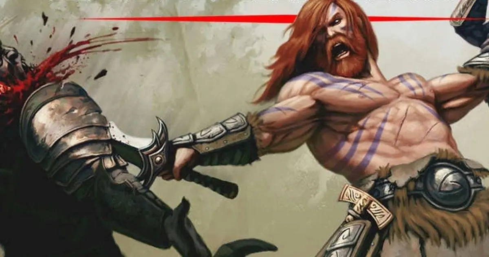

CAMINHOS PRIMITIVOS
CAMINHO DO GUARDIÃO ANCESTRAL (XGTE)
Alguns bárbaros saem de culturas que reverenciam seus antepassados. Essas tribos ensinam que os
guerreiros do passado permanecem no mundo como espíritos poderosos, que podem guiar e proteger a
vida.
Quando um bárbaro que segue este caminho se aguda, o bárbaro entra em contato com o mundo
espiritual e convida esses espiritos guardiões para
ajuda.
Os bárbaros que se empenham em seus guardiões ancestrais podem lutar melhor para proteger
suas
tribos e seus aliados. A fim de consolidar os vínculos com seus guardiões ancestrais, os
bárbaros
que seguem esse caminho cobrem-se em tatuagens elaboradas que celebram atos de seus
antepassados.
Essas tatuagens contam sagas de vitórias contra monstros terríveis e outros rivais temíveis.
CARACTERISTICAS DO CAMINHO DO GUARDIÃO ANCESTRAL(Ancestral Guardian)
PROTETOR ANCESTRAL
Começando quando você escolhe esse caminho no 3° nível, os guerreiros espectrais aparecem quando
você
entra em fúria. Enquanto você está em fúna, a primeira criatura que você acertou com um ataque
no
seu
turno torna-se o alvo dos guerreiros, o que dificulta seus ataques .
Até o início do seu próximo turno,
esse alvo tem desvantagem em qualquer jogada de ataque que não seja contra você, e quando o alvo
atingir
uma criatura diferente de você com um ataque, essa criatura tem resistência ao dano causado pelo
ataque
. O efeito sobre o alvo acaba mais cedo se sua fúria termina.
ESCUDO ESPIRITUAL
Começando no 6° nível, os guardiões espirituais que te protegem podem prover uma defesa
sobrenatural
para aqueles que você defende.
Se você estiver em furia e outra criatura que possa ver a até 9 metros
receba dano, você pode usar sua reação para reduzir esse
dano em 2d6.
Quando você atinge determinados níveis nesta classe, pode reduzir este dano ainda mais : em
3d6 no 10° nível e em 4d6 no 14 ° nível
CONSULTAR OS ESPIRITOS
No 10° nível você ganha a habilidade de se consultar com seus espíritos ancestrais . Quando você
o
faz,
pode conjurar as magias augúrio ou clarividência, sem usar espaços de magia ou componentes
matenais.
Em
vez de criar um sensor esférico, esse uso da clarividência invoca invisivelmente um de seus
espíritos
ancestrais para o local escolhido. Sabedoria é a sua habilidade para conjurar essa magia.
Depois de
conjurar qualquer magia desta forma, você não pode usar essa característica novamente até
terminar
um
descanso curto ou longo.
ANCESTRAIS VINGATIVOS
No 14o nível, seus espíritos ancestrais aumentam de poder o suficiente e conseguem retaliar.
Quando voce
usa seu escudo espiritual para reduzir o dano de um ataque , o atacante recebe uma quantidade de
dano de
energia igual ao dano que seu escudo espintual.
CAMINHO DO ARAUTO DA TEMPESTADE (XGTE)
Todos os bárbaros abrigam uma fúria interior. Sua fúria lhes garante superioridade em força,
durabilidade e velocidade. Bárbaros que seguem o Caminho do Arauto da Tempestade aprendem a
transformar
essa
fúria em um manto de magia primal, que permeia envolta dele.
Quando em fúria um bárbaro desse caminho
toca
as forças da natureza para criar poderosos efeitos mágicos. Arautos da tempestade são típicos
campeões
de
elite que treinam junto a druidas , patrulheiros, e quaisquer outros que jurem proteger a
natureza.
Outros
arautos da tempestade aprimoram suas capacidades em cabanas destruídas por tempestades, em picos
congelados
nos confins do mundo, ou nos mais profundos desertos escaldantes .
CARACTERISTICAS DO CAMINHO DO HERDEIRO DA TEMPESTADE(Storm Herald)
AURA DA TEMPESTADE
Começando no 3° nível, você emana uma aura tempestuosa e mágica enquanto você se enfurece. A
aura se
estende
a 3 metros de você em todas as direções, mas não através da cobertura total.
Sua aura tem um efeito que se
ativa quando você entra na sua fúria, e você pode ativar o efeito novamente em cada um dos seus
turnos
como
uma ação bõnus .
Escolha entre deserto, mar ou tundra. O efeito da aura depende do ambiente escolhido,
conforme detalhado abaixo. Você pode alterar sua escolha de ambiente sempre que você ganha um
nível
nesta classe.
Se os efeitos da sua aura exigirem um teste de resistência, a CD é igual a 8 + seu bônus
de
proficiência + seu modificador de Constituição.
Deserto:
Quando este efeito é ativado, todas as
outras criaturas em sua aura recebem 2 de dano por fogo cada.
O dano aumenta quando você alcança certos
níveis nesta clas se, aumentando para 3 no 5° nível, 4 no 10° nível, 5 no 15° nível e 6 no 20°
nível.
Mar: Quando este efeito é ativado, você pode escolher uma outra criatura que possa
ver em
sua
aura. O
alvo
deve fazer um teste de resistência de Destreza. O alvo recebe ld6 de dano elétrico em caso de
falha
ou
metade de dano se bem-sucedido.
O dano aumenta quando você alcança certos níveis nesta classe,
aumentando
para 2d6 no 10° nível, 3d6 no 15° nível e 4d6 no 20° nível.
Tundra: Quando este efeito é ativado, cada criatura a sua escolha em sua aura ganha 2
pontos
de vida
temporários, já que os espiritos se acostumam ao sofrimento.
Os pontos de vida temporarios aumentam
quando
você atinge certos níveis nesta classe, aumentando para 3 no 5° nível, 4 no 10° nível, 5 no 15°
nível e
6 no
20° nível.
ALMA DA TEMPESTADE
No 6° nível, a tempestade lhe concede beneficios mesmo quando sua aura não está ativa. Os
beneficios
são
baseados no ambiente que você escolheu para sua Aura da Tempestade
Deserto: Você ganha resistência ao dano de fogo, e não sofre os efeitos do calor
extremo,
conforme
descrito
no Guia do Mestre. Além disso, como uma ação, pode tocar em um objeto inflamável que não esteja
sendo
usado
ou transportado por nimguem e incendiá-lo.
Mar:
Você ganha resistência ao dano elétrico, e pode respirar debaixo d'água. Você também ganha um
deslocamento de natação de 9 metros.
Tundra: Você ganha resistência ao frio, e não sofre os efeitos do frio extremo,
conforme
descrito no
Guia do
Mestre. Além disso, como uma ação, pode tocar a água e transformar um cubo de 1 ,5 metros em
gelo,
que
derrete após 1 minuto. Esta ação falha se uma criatura estiver no cubo.
TEMPESTADE PROTETORA
No 10° nível, você aprende a usar seu domínio da tempestade para proteger os outros .
Cada criatura a
sua
escolha tem a resistência a dano que você ganhou
com o recurso Alma da Tempestade enquanto a criatura esteja em sua Aura da Tempestade.
TEMPESTADE FURIOSA
No 14° nível, o poder da tempestade que você canaliza cresce mais forte, atacando seus inimigos.
O
efeito é
baseado no ambiente que você escolheu para a Aura de Tempestade.
Deserto: Imediatamente depois que uma criatura em sua aura acerta um ataque conta
você,
pode
usar sua
reação
para forçar essa criatura a fazer um de teste de resistência de Destreza.
Em caso de falha, a criatura
recebe dano de fogo igual à metade do seu nível bárbaro.
Mar: Quando você atinge uma criatura em sua aura com um ataque, pode usar sua reação
para
forçar essa
criatura a fazer um de teste de resistência de Força.
Em caso de falha, a criatura é derrubada, como se
tivesse sido atingido por uma onda.
Tundra: Sempre que o efeito de sua Aura da Tempestade estiver ativado, pode escolher
uma
criatura que
possa
ver na aura.
Essa criatura deve ter sucesso em um teste de resistência de Força, ou seu deslocamento é
reduzido para O até o início do seu próximo turno, pois uma geada mágica o encobre.
CAMINHO DO FANATICO(Zealot) (XGTE)
Algum as divindades inspiram seus seguidores a se lançarem em uma fúria selvagem. Esses bárbaros
são
fanáticos-guerreiros que canalizam sua fúria em espetaculares demonstrações de poder divino.
Uma
variedade
de deuses em todo o mundo de D&D inspiram seus seguidores a abraçar esse caminho.
Tempus em Reinos
Esquecidos e Hextor e Erythnul de Greyhawk são exemplos excelentes.
Em geral, os deuses que inspiram
fanáticos são divindades de combate, destruição e violência. Nem todos são maus, mas poucos são
bons.
CARACTERISTICAS DO CAMINHO DO FANATICO
FÚRIA DIVINA
Começando quando escolher esse caminho no 3° nível, você pode canalizar fúria divina em ataques
de
armas.
Enquanto você estiver furioso, a primeira criatura que atingiu em cada um dos seus turnos
com um
ataque
de
arma recebe dano extra igual a 1d6 + metade do seu nível bárbaro. O dano extra é necrótico ou
radiante;
você
escolhe o tipo de dano quando adquire
essa característica.
GUERREIRO DOS DEUSES
No 3° nível, sua alma está marcada para uma batalha infinita. Se uma magia, como reviver os
mortos,
tiver o
único intuito de trazê-lo de volta a vida (mas não como um morto-vivo), o conjurador não precisa
de
componentes materiais para conjurar a magia em você.
FOCO FANATICO
A partir do 6° nível, o poder divino que abastece sua fúria pode protegê-lo. Se você falhar em
um
teste
de
resistência enquanto estiver furioso, pode refazê-lo, e deve usar o novo resultado.
Você pode usar essa
característica apenas uma vez por fúria.
PRESENCA ZELOSA
No 10° nível, você aprende a canalizar o poder divino para inspirar o fanatismo nos outros.
Como uma
ação
bônus, você desencadeia um grito de batalha imbuído com energia divina.
Até dez outras criaturas de sua
escolha a até 18 metros que possam lhe ouvir ganham vantagem em jogadas de ataque e testes de
resistência
até o inicio do seu próximo turno.
Depois de usar esta característica, você não pode usá-la novamente até terminar um descanso
longo.
FÚRIA ALEM DA MORTE
A partir do 14° nível, o poder divino que alimenta sua fúria permite que você ignore os golpes
fatais.
Enquanto estiver furioso, ter 0 pontos de vida não o deixa inconsciente. Você ainda deve
fazer
testes de
resistência contra morte, e sofre os efeitos normais de receber dano enquanto estiver em 0
pontos de
vida.
No entanto, se você morreria devido a falhar nos testes de resistência contra morte, não morre
até
que
sua
fúria termine, e só caso ainda esteja com 0 pontos de vida.
CAMINHO DO FURIOSO(PHB)

Para alguns bárbaros, a fúria é um meio para um fim – esse fim é a violência.
O Caminho do Furioso é um
caminho de fúria livre, entumecido em sangue.
A medida que você entra na fúria de um furioso, você vibra
no
caos da batalha, despreocupado com a sua própria saúde ou bem-estar.
FRENESI
Começando no momento que você escolhe esse caminho no 3° nível, você pode entrar num frenesi
quando
estiver
em fúria.
Se você desejar, pela duração da sua fúria, você pode realizar um único ataque corpo-a-corpo
com
arma, com uma ação bônus, em cada um de seus turnos após esse.
Quando sua fúria acabar, você sofrerá um
nível de exaustão (como descrito no apêndice A).
FÚRIA INCONSCIENTE
A partir do 6° nível, você não pode ser enfeitiçado ou amedrontado enquanto estiver em fúria. Se
você
estava
enfeitiçado ou amedrontado quando entrou em fúria, o efeito é suspenso pela duração da fúria.
PRESENCA INTIMIDANTE
A partir do 10° nível, você pode usar sua ação para amedrontar alguém com sua presença
intimidante.
Quando o
fizer, escolha uma criatura que você possa ver a 9 metros.
Se a criatura puder ver ou ouvir você, ela
deve
ser bem sucedida num teste de resistência de Sabedoria (CD igual a 8 + seu bônus de proficiência
+
seu
modificador de Carisma) ou ficara com medo de você até o fim do seu próximo turno.
Nos turnos seguintes,
você pode usar sua ação para estender a duração desse efeito na criatura amedrontada até o
início do
seu
próximo turno.
Esse efeito termina se a criatura terminar seu turno fora da sua linha de visão ao a mais
de
18 metros de você.Se a criatura for bem sucedida no teste de resistência, você não poderá usar
essa
característica nessa criatura novamente por 24 horas.
RETALIACÃO
A partir do 14° nível, quando você sofrer dano de uma criatura que esteja a até 1,5 metro de
você,
você
pode
usar sua reação para realizar um ataque corpo-a-corpo com arma contra essa criatura.
CAMINHO DO GUERREIRO TOTEMICO(Totem Warrior) (PHB)
O Caminho do Guerreiro Totêmico é uma jornada espiritual, à partir do momento que o bárbaro
aceita
um
espirito animal como seu guia, protetor e inspiração. Em batalha, seu espirito totêmico preenche
você
com
força sobrenatural, adicionando combustível mágico a sua fúria bárbara.
A maioria das tribos bárbaras consideram que um animal totêmico possui parentesco a um clã em
particular. Em
tais casos, é incomum a um indivíduo possuir mais de um espirito animal totêmico, apesar de
existirem
exceções.
CONSELHEIRO ESPIRITUAL
Seu caminho é buscar a sintonia com o mundo natural, concedendo a você uma afinidade com as
bestas.
A
partir
do 3° nível, quando você toma esse caminho, você recebe a habilidade de conjurar as magias
sentido
bestial e
falar com animais, mas apenas na forma de rituais, como descrito no capítulo 10.
TOTEM ESPIRITUAL
A partir do 3° nível, quando você adota esse caminho, você escolhe um totem espiritual e ganha
suas
características.
Você deve fazer ou adquirir um objeto físico como totem – um amuleto ou adorno similar
–
que incorpora o pelo ou penas, garras, dente ou ossos do animal totêmico. Se você quiser, você
também
adquire pequenos atributos físicos que o assemelham ao seu totem espiritual. Por exemplo, se
você
tiver
o
totem espiritual do urso, você seria incomumente peludo e de pele grossa, ou se o seu totem for
a
águia,
seu
olhos teriam um brilho amarelado.
Seu totem animal deve ser um animal relacionado aos listados aqui, mas pode ser um mais
apropriado a
sua
terra natal. Por exemplo, você poderia escolher falcão ou abutre ao invés de águia.
Águia: Quando estiver em fúria e não estiver vestindo uma armadura pesada, as outras
criaturas
terão
desvantagem nas jogadas de ataque de oportunidade contra você e você pode usar a ação de
Disparada
como
uma
ação bônus no seu turno.
O espirito da águia torna você um predador que pode vagar pelo meio da briga
com
facilidade.
Lobo. Quando estiver em fúria, seus amigos tem vantagem nas jogadas de ataque
corpo-a-corpo
realizadas
contra qualquer criatura a 1,5 metro de você que seja hostil a você.
O espirito do lobo transforma você
em
um líder de caça.
Urso. Quando em fúria, você adquire resistência a todos os tipos de dano, exceto dano
psíquico.
O
espirito
do urso torna você vigoroso o suficiente para permanecer de pé diante de qualquer castigo.
Cervo. Durante Fúria seu deslocamento aumenta em + 4,5m se não estiver usando
armadura
pesada
Tigre. Durante Fúria em todos os seus saltos ele adiciona + 3m para a distância e +
90cm
para
sua altura
ASPECTO DA BESTA
No 6° nível, você adquire um benefício místico baseado no totem que você escolheu. Você pode
escolher o
mesmo animal que selecionou no 3° nível ou um diferente.
Águia. Você ganha a visão aguçada de uma águia. Você pode ver a até 1,6 km sem
dificuldade,
sendo
capaz
de
discernir até os menores detalhes quando estiver olhando para algo a menos de 30 metros de você.
Além
disso,
penumbra não impõem desvantagem nos seus testes de Sabedoria (Percepção).
Lobo. Você ganha a sensibilidade predatória de um lobo. Você pode rastrear outras
criaturas
quando
estiver
viajando a passo rápido e você pode se mover furtivamente quando estiver viajando a passo normal
(veja o
capítulo 8 para as regras de passo de viagem).
Urso. Você ganha a força de um urso. Sua capacidade de carga (incluindo carga máxima
e
capacidade de
erguer)
é dobrada e você tem vantagem em testes de Força realizados para empurrar, puxar, erguer ou
quebrar
objetos.
Cervo. Seja montado ou a pé seu deslocamento de viagem é dobrado. Isso também se
aplica a
até
dez
aliados a
18m do bárbaro, desde que ele não esteja incapacitado.
Tigre. Recebe proficiência em duas perícias entre Acrobacia, Atletismo, Furtividade e
Sobrevivência.
ANDARILHO ESPIRITUAL
No 10° nível, você pode conjurar a magia comunhão com a natureza, mas apenas como um ritual.
Quando o
fizer,
uma versão espiritual de um dos animais que você escolheu como Totem Espiritual ou Aspecto da
Besta
aparece
para você para transmitir a informação que você busca.
SINTONIA TOTEMICA
No 14° nível, você ganha um benefício magico baseado em um totem animal, à sua escolha.
Você pode
escolher o
mesmo animal que selecionou anteriormente ou um diferente.
Águia. Quando estiver em fúria, você adquire um deslocamento de voo igual ao seu
deslocamento
de
caminhada.
Esse benefício funciona apenas em pequenos explosões: você cai se terminar seu turno no ar e não
tiver
nada
em que possa se agarrar.
Lobo. Quando estiver em fúria, você pode usar uma ação bônus no seu turno para
derrubar
uma
criatura
Grande
ou menor no chão quando você atingi-la com um ataque corpo-a-corpo com arma.
Urso. Quando estiver em fúria, qualquer criatura a até 1,5 metro de você que for
hostil a
você terá
desvantagem nas jogadas de ataque contra outros alvos além de você ou outro personagem com essa
característica.
Um inimigo é imune a esse efeito se ele não puder ver ou ouvir você ou caso ele não
possa
ser amedrontado.
Cervo: Durante Fúria como uma ação bônus você pode se mover pelo espaço de uma
criatura
grande ou menor.
A
criatura alvo deve passar um teste de resistência de Força (DC 8 + seu bônus de Força + seu
bônus de
proficiência) ou é derrubada sofrendo 1d12+FOR de dano.
Tigre: Durante Fúria, caso se mova pelo menos 6m (2 quadrados) em linha reta em
direção a
uma
criatura
antes
de fazer um ataque corpo-a-corpo, você pode fazer um ataque adicional com uma ação bônus.
CAMINHO DA FÚRIA DA BATALHA(Battlerager) (SCAG)
restrição: Somente anões seguidores dos deuses da guerra podem seguir o caminho do
Battlerager.(converse com seu mestre para utilizar esta subclasse)
Eles se especializaram no combate com uma volumosa armadura repleta de cravos pontiagudos, com a
qual
eles
se entregam a fúria do combate e lançam-se sobre seus adversários, transformando seus próprios
corpos em
armas letais.
Armadura do Battlerager
A partir do 3º nível, você ganha à habilidade de usar a Armadura de Cravos como uma arma (veja
descrição
do
item abaixo).
Enquanto estiver usando essa armadura sob o efeito da Fúria, você pode usa-la para fazer
um
ataque corpo a corpo contra um alvo adjacente a você como uma ação de bônus.
Se o ataque acertar, os
espinhos infligem 1D4 de dano perfurante, mais seu modificador de Força.
Além disso, quando você usa a
ação
de ataque para agarrar uma criatura, o alvo recebe 3 de dano penetrante se o seu teste de
agarrar
for
bem-sucedido.
Armadura de Cravos:
Essa armadura é uma variedade rara de armadura média, criada apenas por battleragers.
Ela
consiste em um
casaco de couro e calças coberto de espinhos de metal.
AC: 14 + modificador de Destreza (Max 2),
Furtividade: Desvantagem,
Peso: 45 lbs
Custo: 75 Peças de Ouro
Abandono Descuidado
A partir do 6º nível, quando você usa Ataque Descuidado enquanto estiver em fúria, você também
ganha
pontos
de vida temporários igual ao seu modificador de Constituição (min. 1).
Eles desaparecem quando termina
sua
ativação de Fúria.
Carga do Battlerager
No 10º nível, você pode tomar a ação Correr (dobro do movimento no turno) como uma ação bônus
enquanto
estiver em fúria.
Vingança dos Cravos
A partir do nível 14, quando uma criatura adjacente a você acerta-lo com um ataque corpo a
corpo, o
atacante
sofre 3 de dano perfurante se você estiver em fúria, não estiver incapacitado e estiver vestindo
a
Armadura
de Cravos.
CAMINHO DA BESTA(Beast) (TCOE)
Bárbaros que seguem o Caminho da Besta desenham sua raiva de uma faísca bestial queimando dentro
de
sua
almas.
Essa besta irrompe no auge da raiva, transformando fisicamente o bárbaro.
Tal bárbaro pode ser
habitado por um primitivo espírito ou ser descendente de metamorfos.
FORMA DA BESTA
Recurso de Caminho da Besta de 3º nível
Quando você entra em sua furia, você pode transformar, revelando o poder bestial dentro de
você.
Até
a
raiva
terminar, você manifesta uma arma natural.
Conta como uma arma corpo-a-corpo simples para você, e você
adiciona seu Modificador de força para as jogadas de ataque e dano quando você ataca com ele.
Você
escolhe a
forma da arma cada vez que usa a raiva:
Mordida: Sua boca se transforma em um focinho bestial ou grandes mandíbulas (sua
escolha).
causa 1d8 de
Dano
penetrante em um acerto.
Uma vez em cada um de seus turnos quando você danifica uma criatura com esta
mordida, você recupera um número de pontos de vida igual ao seu bônus de proficiência, desde que
você
tenha
menos de metade de seus pontos de vida quando você acerta.
Garras: Cada uma de suas mãos se transforma em uma garra, que você pode usar como
arma se
estiver vazia.
isto causa 1d6 de dano cortante em um acerto.
Uma vez em cada de seus turnos quando você ataca com uma
garra
usando a ação de Ataque, você pode fazer um ataque adicional de garra como parte da mesma ação.
Rabo: Você cria uma cauda espinhosa e chicoteante, que causa 1D8 de dano perfurante
em um
acerto.
você acerta com uma jogada de ataque, você pode usar seu reação para deslizar o rabo e rolar um
d8,
aplicando um bônus para sua CA igual ao número rolado, potencialmente fazendo com que o ataque
não
acerte
você.
ALMA BESTIAL
Trajeto da Besta de 6º nível
O poder feroz dentro de você aumenta, causando com que as armas naturais de sua Forma da
Besta
contem
como
mágicas com o propósito de superar a resistência e imunidade a ataques e danos não mágicos. Você
também
pode
alterar sua forma para ajudá-lo a se adaptar a seu entorno.
Quando você termina um curto ou longo
descanso,
escolha um dos seguintes benefícios, que dura até você terminar seu próximo descanso curto ou
longo:
- Você ganha uma velocidade de natação igual à sua velocidade de caminhada, e você pode respirar
debaixo
d'água.
- Você ganha uma velocidade de escalada igual à sua caminhada velocidade, e você pode escalar
superfícies
difíceis, incluindo de cabeça para baixo no teto, sem a necessidade de fazer um teste de
habilidade.
- Quando você pula, você pode fazer um teste de Força (Athletics) verifique e amplie seu
salto
em
uma
série de
pés iguais ao total do resultado. Você pode fazer isso apenas uma vez por turno.
FÚRIA INFECCIOSA
Trajeto da Besta de 10º nível
Quando você acerta uma criatura com suas armas naturais enquanto você está furioso, a besta
dentro
de
você
pode amaldiçoar seu alvo com fúria.
O alvo deve ter sucesso em um teste de resistência de Sabedoria (CD
igual a 8 + seu Modificador de constituição + seu bônus de proficiência) ou sofrer um dos
seguintes
efeitos
(sua escolha):
- alvo deve usar sua reação para fazer um ataque corpo a corpo contra outra criatura de sua
escolha
que
você
pode ver.
- alvo sofre 2d12 de dano psíquico. Você pode usar este recurso um número de vezes igual o
seu
bônus de
proficiência, e você recupera todos os usos quando você termina um longo descanso.
CHAMAR A CAÇA
Trajeto da Besta de 14º nível
A besta dentro de você se torna tão poderosa que você pode espalhar sua ferocidade para os
outros e
ganhar
resiliência deles se juntando à sua caça.
Quando você entra na sua furia, você pode escolher uma série
de
outras criaturas dispostas que você pode ver a 30 pés de você igual ao seu Modificador de
constituição
(mínimo de uma criatura).
Você ganha 5 pontos de vida temporários para cada criatura que aceita esse recurso. Até que
a
raiva
termine,
o as criaturas escolhidas podem usar o seguinte benefício uma vez em cada um de seus turnos:
quando a
criatura atinge um alvo com uma jogada de ataque e causa dano a ele, a criatura pode rolar um d6
e
ganhar um
bônus de dano igual ao número rolado. Você pode usar este recurso um número de vezes igual ao
seu
bônus
de
proficiência, e você recupera todos os usos quando você termina um longo descanso.
PATH OF WILD MAGIC (TCOE)
Muitos lugares no multiverso são repletos de beleza, emoção intensa e magia desenfreada; o
Feywild,
os
Planos Superiores e outros reinos do sobrenatural poder irradiar com tais forças e pode
profundamente
influenciar pessoas.
Como gente de sentimento profundo, bárbaros são especialmente suscetíveis a essas
influências selvagens, com alguns bárbaros sendo transformados pelo Magia. Esses bárbaros cheios
de
magia
caminham pelo Caminho da Magia Selvagem.
Elfo, tiefling, aasimar e genasi.bárbaros muitas vezes procuram
este caminho, ansiosos para se manifestar a magia sobrenatural de seus ancestrais.
CONSCIENCIA MAGICA
Recurso Path of Wild Magic de 3º nível
Como uma ação, você pode abrir sua consciência para o presença de magia concentrada. Até o fim
de
seu
próximo turno, você sabe a localização de qualquer feitiço ou item mágico a 60 pés de você que
não
está
atrás de cobertura total.
Quando você sente um feitiço, você aprende qual escola de magia à qual
pertence.
Você pode usar este recurso um número de vezes igual ao seu bônus de proficiência, e você
recupera
todos
os
usos quando você termina um longo descanso.
WILD SURGE
Recurso Path of Wild Magic de 3º nível
A energia mágica agitando dentro de você às vezes irrompe de você. Quando você entrar em sua
raiva,
role
a
tabela do Wild Magic para determinar o efeito mágico efeito produzido.
Se o efeito requer um teste de resistência, a CD é igual a 8 + seu bônus de proficiência + seu
modificador
de constituição.
BOLSTERING MAGIC
Recurso Path of Wild Magic de 6º nível
Você pode aproveitar sua magia selvagem para se fortalecer ou um companheiro. Como uma ação,
você
pode
tocar
um criatura (que pode ser você) e conferir um dos os seguintes benefícios de sua escolha para
aquela
criatura:
- Por 10 minutos, a criatura pode rolar um d3 quando fizer uma jogada de ataque ou um teste
de
habilidade
e
adicione o número rolado ao rolo d20.
- Role um d3. A criatura recupera um slot de magia gasto, cujo nível é igual ao número
rolado ou
mais
baixo (a
escolha da criatura). Uma a criatura recebe este benefício, aquela criatura não pode recebe-lo
novamente
até
depois de um longo descanso.
Você pode realizar esta ação um número de vezes igual ao seu bônus de proficiência, e
você
recupera
todos os
usos usa quando você termina um longo descanso.
BACKLASH INSTAVEL
Recurso Path of Wild Magic de 10º nível
Quando você corre perigo durante sua raiva, a magia dentro de você pode atacar; imediatamente
após
você
tomar dano ou falhar em um teste de resistência durante a fúria, você pode use sua reação para
rolar
na
mesa
do Wild Magic e imediatamente produzir o efeito rolado.
Este efeito substitui o seu efeito Wild Magic
atual.
SURGE CONTROLADO
Recurso Path of Wild Magic de 14º nível
Sempre que você rola na mesa do Wild Magic, você pode rolar o dado duas vezes e escolher qual
das
duas
efeitos para desencadear.
Se você rolar o mesmo número em ambos os dados, você pode ignorar o número e
escolher qualquer efeito sobre a mesa.